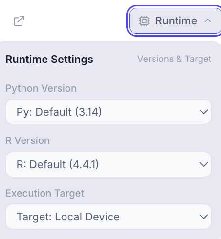

Chat View
Use Chat View to ask scientific questions, attach data files, run code, and inspect results.
Sending and Editing Messages
- Type a prompt in the input box and press Enter to send.
- Press Shift+Enter to add a new line.
- Move the pointer over one of your sent messages to copy or edit it. Saving an edited message re-runs the conversation from that message and drops later turns.
Attaching Files
Click the paperclip icon (📎), paste from the clipboard, or drag files onto the chat area:
- Images (PNG, JPG, SVG): Attached plots and figures.
- Tables and Data (CSV, TSV, Parquet, RDS, Excel): rolv saves the full file in your session folder and sends only a short preview to the AI model.
- Scripts and Documents (R, Python, Bash, PDF, Markdown): Attached code or reference files.
Hover over an attachment chip above the input box to remove it before sending.
How Chat Selects a Workflow
Chat starts in execution mode. For analysis tasks, rolv searches the recipe library first and shows matching recipes. Chat builds a new graph from scratch only when you ask for a custom workflow.
Confirming Proposed Actions
When chat asks whether to load a recipe, replace a file, or edit a protected node, your next short reply confirms or cancels:
- yes / ok / y / run it / run the recipe: Run the proposed action.
- no / cancel: Cancel the proposed action.
- Any longer message starts a new request and clears the pending question.
You can also select a suggested recipe by name or position (for example, do 2).
Use Recipe vs. Saying "run it"
| Action | Result |
|---|---|
| Click Use Recipe on a recipe card, or Run Recipe in the library | Opens a new graph session with that recipe. |
Reply run it, yes, or the recipe name inside the current chat |
Loads the recipe into the current session and replaces its graph. |
If a Cloud Library recipe is not on your disk yet, rolv downloads it first.
Auto-Run
The Auto-Run toggle in the chat header controls automatic code execution:
- On (default): rolv runs generated Python, R, or Bash code automatically and reads the output.
- Off: Turning Auto-Run off asks for confirmation. When off, rolv suggests code blocks and pauses so you can run or review them manually.
Auto-Run is saved per session.
Stopping a Run
While the agent works, the send button changes to a red Stop square. Click Stop to cancel the active run.
Scientific Critic Auditing
When creating complex plots or statistical tables, rolv can run an isolated Scientific Critic sub-agent. The critic checks figure readability, axis labels, and statistical or biological consistency, and separates plotting errors from upstream data issues.
Literature Citations
When answering questions from PubMed, GEO, ClinicalTrials.gov, patents, or the web, rolv formats citations as clickable links so you can open the source record directly.
Agent Activity
While rolv works, the activity panel lists each tool step instead of a blank loading screen:
| Step Type | Meaning |
|---|---|
| Thinking / Preamble | Current action or short reasoning note. |
| Code | Python, R, or Bash script written by the agent. |
| Code Result | Execution stdout, stderr, and exit code. |
| Warning | Error, cap, or runtime notice. |
| Plan Confirmation | Proposed workflow plan waiting for your approval. |
Session Header
- Title: Click to rename the session.
- Working Directory (📁): Set or change the session folder. Click the external link icon to open the folder in your file manager.
- Runtime: Set the project Python Version, R Version, and Execution Target.
- Auto-Run: Toggle automatic code execution.
- Step into Graph →: Convert chat scripts into a visual pipeline, or switch to the session's existing graph.
Runtime Settings

Click Runtime in the chat header to set runtime versions and the execution target for the current project:
- Python Version: Choose Py: Default (uses your global version from Settings) or pin a specific version (
3.10–3.14). rolv writes the pin toenv/python-requirements.txt. - R Version: Choose R: Default (uses your global version from Settings) or pin a specific version (
4.2.3,4.3.3, or4.4.1). rolv writes the pin toenv/r-packages.txt. - Execution Target: Choose Target: Local Device or a saved remote target from Settings.
A colored dot appears on the Runtime button when a project version pin or a remote target is active.
To run one compute step on a remote target while the rest of the workflow stays local, ask Chat to move that node to a named SSH target (for example, Run the docking node on mdc-gpu-tunnel). rolv resolves the target by its display name and marks that node stale for the next run.
When you change a pinned Python or R version, rolv recreates the session environment if the installed version does not match. If you select a version before you assign a working directory, rolv applies the pin after you choose a folder. When you save a recipe, rolv copies the project version pins into the recipe files.
Clickable Session File Links
When Chat mentions a file inside your current working directory, rolv verifies that the file exists and makes the filename clickable:
- Viewable files (tables, plots, PDFs, reports, and text files): Click the link to open the file directly.
- Scripts and executables (
.py,.R,.sh, or binary files): Click the link to reveal the file in Finder or File Explorer instead of running it.
Links outside the active working directory are blocked for safety.
Moving Between Chat and Graph
A session can contain both a chat thread and a graph:
- If a session has executed scripts but no graph yet, clicking Step into Graph → opens a review card in chat:
- Approve & Build Workflow: Convert working scripts into connected graph nodes.
- Request Changes: Refine the script selection in chat.
- Empty graph: Open a blank canvas.
- If a graph already exists, Step into Graph → switches directly to Graph View.
- In Graph View, click ← Back to Chat to return to the conversation. Chat remains active even after a graph exists.
When you run a graph from chat and a step fails, rolv inspects the logs, adjusts code or inputs, and retries up to 2 recovery attempts before writing the final summary.
Ask a Human Expert
Click the graduation cap icon (🎓) in the chat header to send a scientific or methods question to a human expert. You can attach the current conversation for context. This service is experimental, so replies can take time.
rolv Improvement Reports
When rolv detects repeated recoverable workflow failures, environment setup errors, or loop retries (5 weighted friction points stored locally), it offers to send an anonymized diagnostic report.
- In Chat View, an ephemeral banner appears above the input box.
- Outside Chat View (for example in Graph View), a floating toast appears so you can review and send without leaving your graph.
- Click Review & Send to edit the title, description, and your own notes before sending.
- File paths, email addresses, and secrets are removed automatically before upload.
- For private or local recipes, recipe names, identifiers, and code diffs are never shared. For cloud recipes, you can uncheck recipe details in Attached technical details.
- Use Snooze 14d to hide prompts for 14 days, Turn off to disable prompts, or configure automatic sending in Settings.
Token Quota Alerts
If your account reaches its daily or monthly token limit, rolv shows a quota dialog. Configure a custom LLM provider in Settings to continue using your own API key or a local Ollama model.
Next: Graph View →